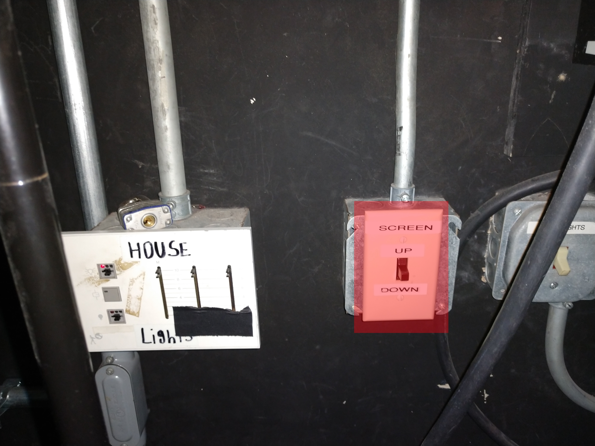
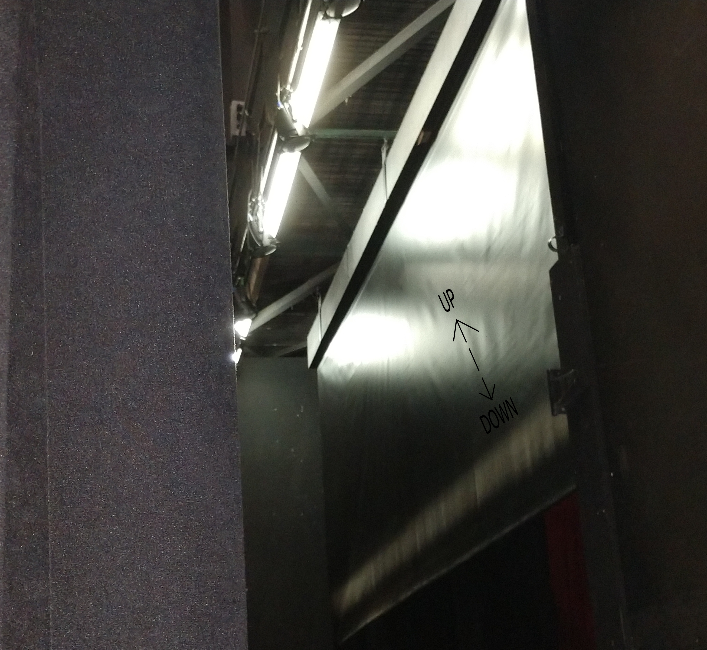
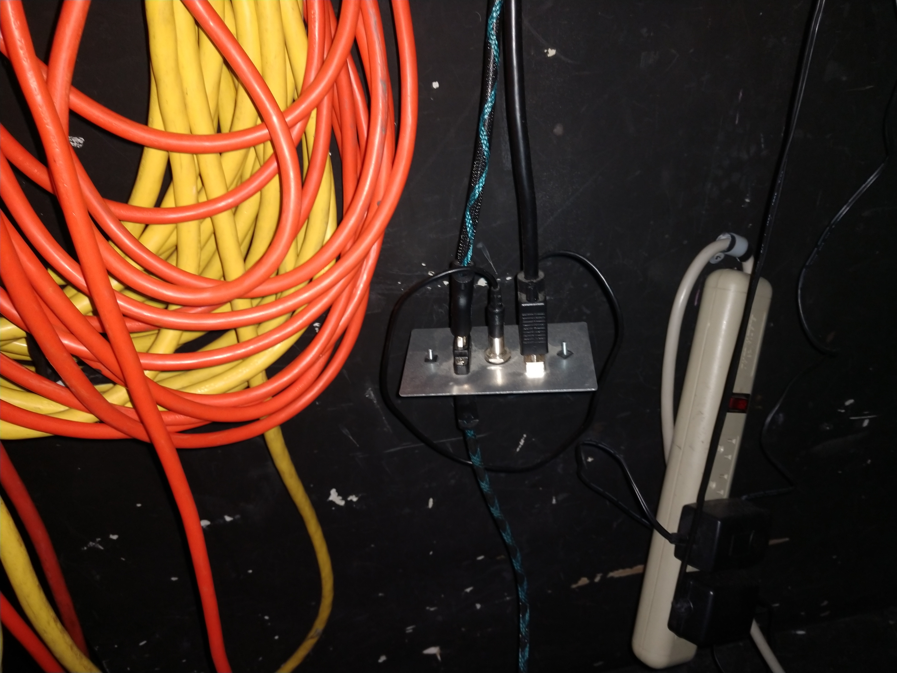
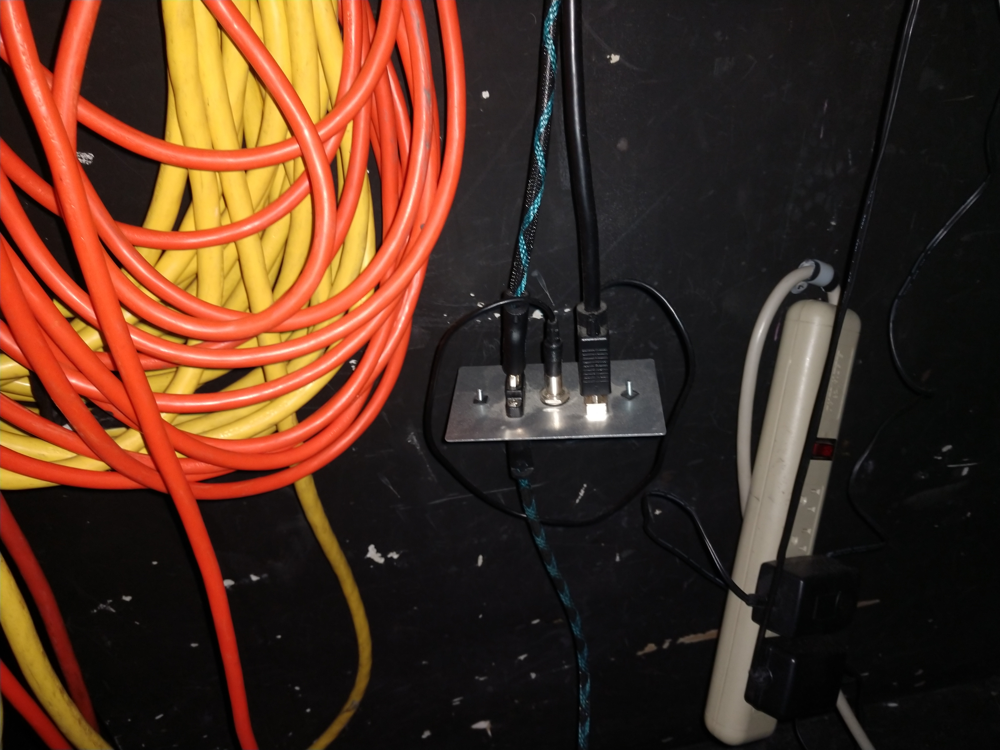
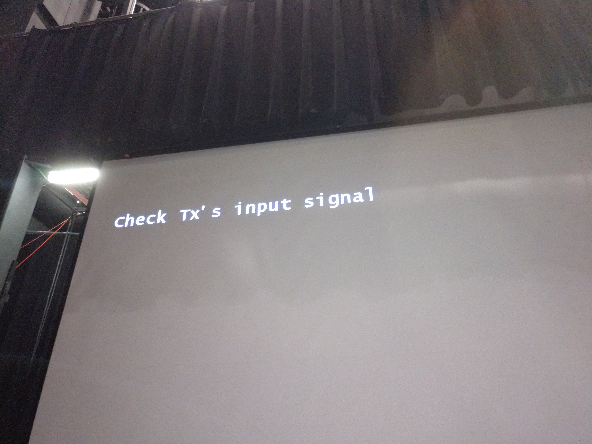
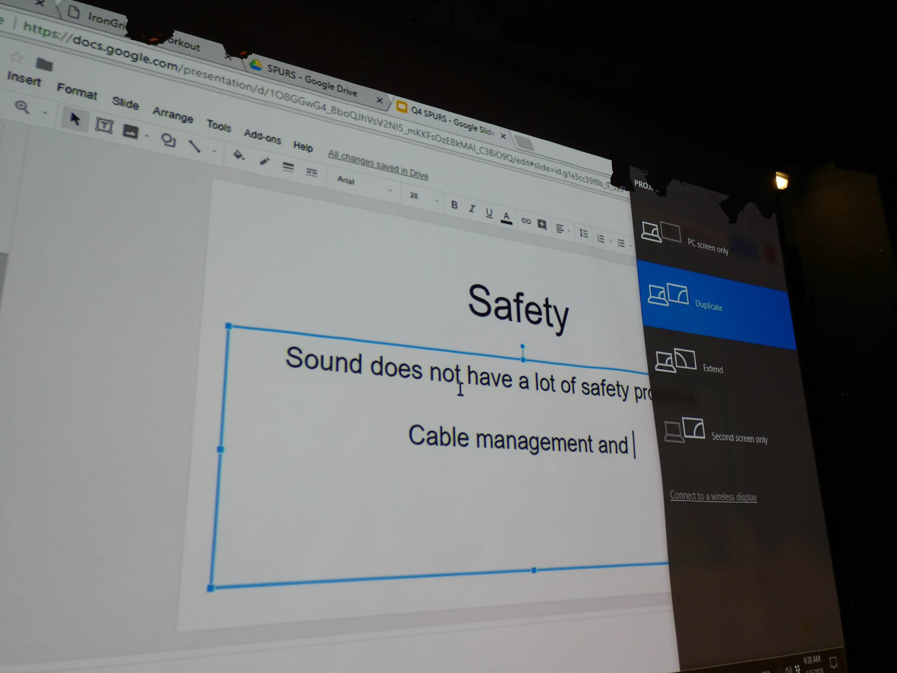

The Mcauliffe Auditorium at concord high
In this tutorial you will learn how to operate the sound and picture of the Auditorium for your event, lets get right into it, this guide is a step by step process to assemble the soundsystem and video system for two people on stage with mics and a computer displaying to the screen.Step 1: Prepare the Audio system
Start by going backstage and turning the sound control on. Press the on switch in the 19.5inch rack
Also open the drawer while we're in here, take out the mics(Highlighted below in green) you need, and the remote(highlighted below in blue)
NOTE: The remote sometimes is left in the sound booth, check there before asking for help

Now that you have the Mic and the Remote you're ready for the next step
Step 2: Prepare the visuals
Next to the 19.5 inch rack there are a few components that need to be used, start by dropping the screen to do this, find the switch(highlighted below in red) and lower the screen untill apropriate, dont drop it all the way to the floor

One last thing, go around to the right side of the 19.5inch rack box and find this switch (its on the upper right of the face) (highlighted below in purple) And make sure the switch is pushed up towards "REAR HOUSE"

Great job, now that those are done you're ready to move to the next step
Step: Prepare the video
In this same area you will find a blue and black HDMI cable, 
This cable will be connected to the projector by default, take it off the wall and run it to where you would like your computer to be placed.
Once this is done make sure to tell your computer to mirror to the HDMI, take out the remote and turn on the projector. Press the button labeled "ON" while pointing it at the projector, it may take a try or two.

With any luck you'll see one of these screens

If you see the one on the right, you're all set, if you see the one on the left, check to make sure your computer is set to mirror, and make sure all connections are secure, if nothing works, press the HDMI button on the remote.
Step, put number here: Audio
Now that all the video is setup, and you are equiped with between 0-2 mics, head up to the sound booth and find the mixer
On the bottom of the mixer there are serveral color coded pieces of tape that mark out witch mic is connectd to them, by default the pink goes to pink, and the green, to the neon yellow (m) but there is a green light on each mixer that acts as a VU meter, so if you cant find the mic, after turning it on speak or tap the mic to find the green VU

Once you find the volume and start hearing the mic through the speakers you're all set to go. Last of all check the volume of the HDMI by turning the knob marked on the picture above labled "Tape In" Now onto the next guide: The Lighting system